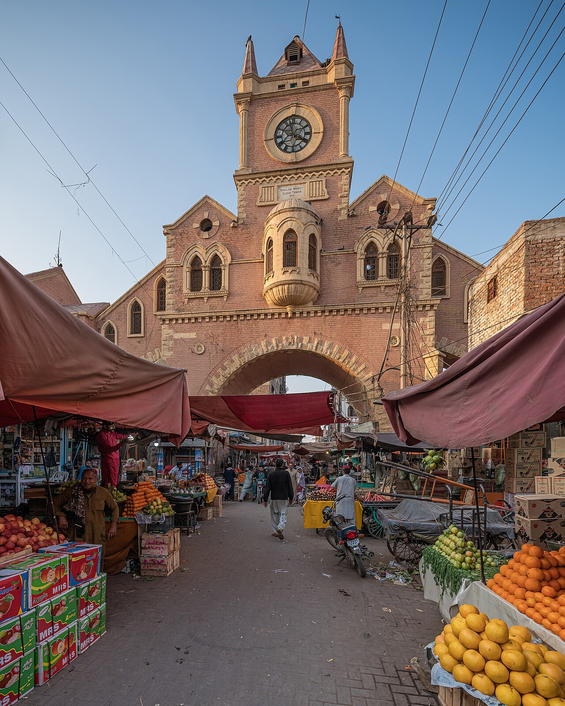

In progress
💡 Streetlights
· FMH-2026-1842

Hyderabad, Sindh · Community reporting
See a problem in Hyderabad.
Report it. Track it.
From potholes and broken streetlights to water leaks and overflowing drains, report local issues across the city — and follow them until they are actually fixed.
Free · No account needed to report · Public status tracking
Photo: A.Savin / Wikimedia Commons (FAL)
1,248
Reports received
Since March 2026
812
Reports resolved
65% resolution rate
14
Areas covered
Across Hyderabad
9 days
Median fix time
For resolved reports
Sample figures for layout — replace with totals from the reports database.
How it works
Three steps. That's it.
No long forms and no office visits. A clear photo and an honest description are enough to get started.
1
Report
Pin the location, add a photo, and describe the problem. Your name and phone number are optional.
2
Verify
People nearby confirm the report is real. Community-verified issues move up the queue.
3
Track
Every report has a public status. You get an update each time it moves forward — including when it is fixed.
What can I report?
Anything that needs fixing in the city
Pick the closest category. If nothing fits, choose “Something else” and explain it in your own words.
🕳️Roads & potholes
💡Streetlights
🚰Water supply
🌊Drainage & sewage
🗑️Garbage
🌳Parks & trees
🚨Public safety
✍️Something else
Recently reported
What is happening across the city
A small sample of open and recently resolved reports. Open the map to browse by area and category.
Community verified
🌊 Drainage & sewage
· FMH-2026-1839
Sewage overflowing on the service lane
View on map →
Resolved
🕳️ Roads & potholes
· FMH-2026-1821
Deep potholes near the park entrance
View on map →
Reported
🗑️ Garbage
· FMH-2026-1833
Garbage pile behind the bazaar shops
View on map →Coverage
Every neighbourhood, one platform
We are starting with these areas and expanding as more volunteers join.
📍Latifabad
📍Qasimabad
📍Saddar
📍Hirabad
📍Shahi Bazaar
📍Paretabad
📍Tando Yousuf
📍Bhitai Nagar
📍Citizen Colony
📍Gulistan-e-Sajjad
📍Auto Bhan Road
📍Wadhu Wah
📍SITE Area
📍Jamshoro Road
Spotted something broken?
Don't scroll past it.
One photo and two lines of description is all it takes. It is faster than writing a tweet — and far more useful.
Report an issue